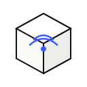
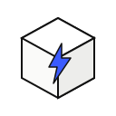
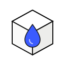
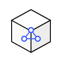

One operating layer for every city system
SmartCity Nexus unifies traffic, energy, water, and public-safety data into a single real-time layer — so city teams see what's happening and act on it in seconds, not days.
Rolling out Nexus is simpler than it sounds
No forklift upgrade, no multi-year procurement cycle. Most teams are looking at their first live data layer inside six weeks.
See rollout timelinesFast detection
Anomalies surface in seconds, not end-of-day reports.
Expert support
A dedicated integration engineer for every deployment.
Predictable pricing
Flat per-population pricing — no surprise overage fees.
Secure by design
SOC 2 Type II compliant, isolated per-city by default.
Every system, one console

Traffic intelligence
Live congestion mapping and adaptive signal timing that responds to real conditions, not fixed schedules.

Energy grid monitoring
Track load, detect anomalies, and forecast demand across the distribution network in real time.
Public safety alerts
Route incident data to the right response team automatically, with full audit history.

Water & utilities
Leak detection and consumption analytics across the entire municipal water network.
Predictive maintenance
Flag failing infrastructure before it fails, using sensor trends instead of fixed inspection cycles.

Open data API
Give researchers and local developers secure, permissioned access to anonymized civic data.
What your team actually looks at every morning
Congestion by district — last 7 hours
From raw sensor data to a decision, in three steps
Connect
Existing sensors, cameras, and meters plug into Nexus through open protocols — no rip-and-replace required.
Unify
Every feed lands in one normalized data layer, timestamped and geo-tagged for cross-system correlation.
Act
Rules and dashboards turn that data into alerts, automations, and reports your teams actually use.
Built with the people who run cities
"We cut average incident response time by a third in the first two quarters."
"Finally, one dashboard our operations team actually opens every morning."
"Predictive maintenance alone paid for the platform within a year."
See Nexus running on your city's own data
We'll set up a sandbox with a live feed from one of your existing systems — no procurement required to take a look.